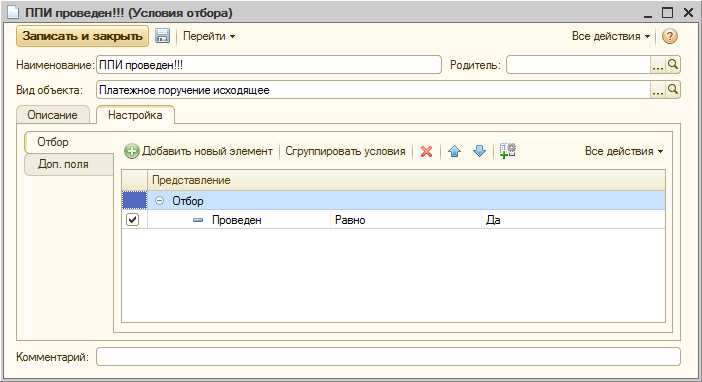
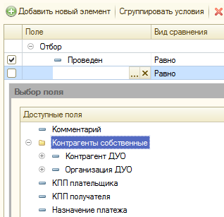

Условия отбора

Рисунок 1. Форма настройки Условия отбора.
- В поле "Наименование" ввести краткое имя условия, отражающее его назначение,
- В поле "Родитель", если необходимо, указать группу справочника для размещения данного условия,
- В поле "Вид объекта" указывается Вид объекта условия отбора из справочника "Виды объектов метаданных",
- На вкладке "Описание" написать текст, отражающий назначение условия,
- Перейти на вкладку "Настройка",
- На закладке "Отбор" ввести набор выражений, описывающих Условие отбора. На этой странице, в таблице правил отбора, доступны реквизиты Вида объекта условия отбора. Так же на закладке могут быть доступны дополнения условий отбора (дополнительные поля см. Рисунок 2).
- На закладке "Доп. поля" описать дополнительные поля, если такие нужны для формирования условий.
- Все правила отбора, и дополнительные поля описываются согласно общим правилам работы с Системой Компоновки Данных 1С.

Рисунок 2. Выбор дополненных полей в форме настроек Условия отбора.